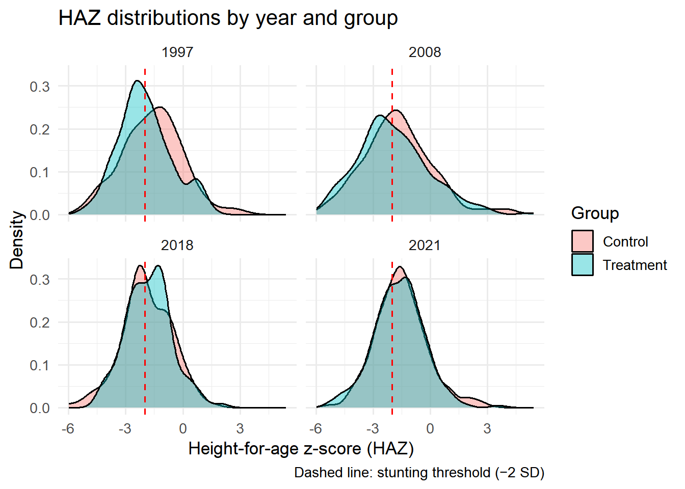
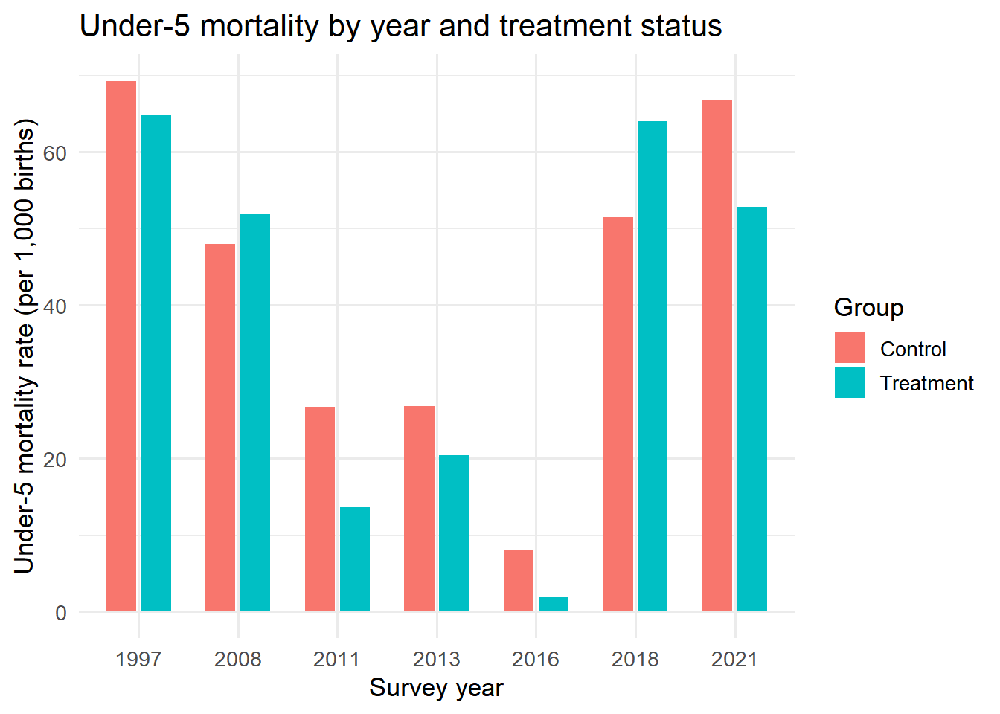
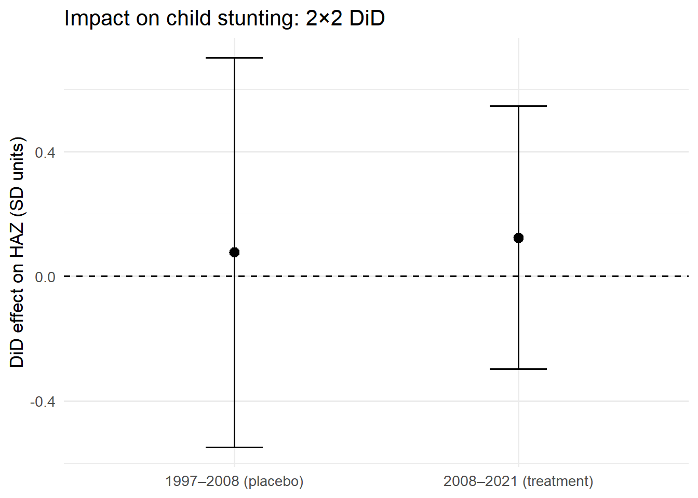
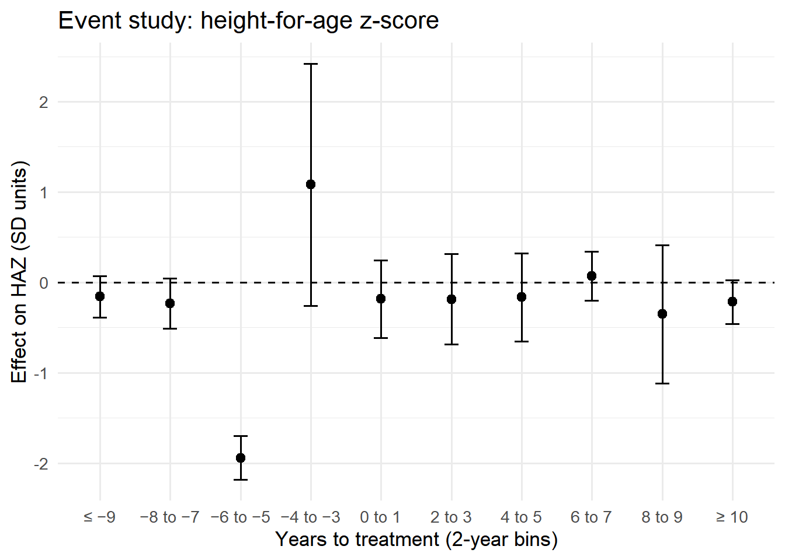
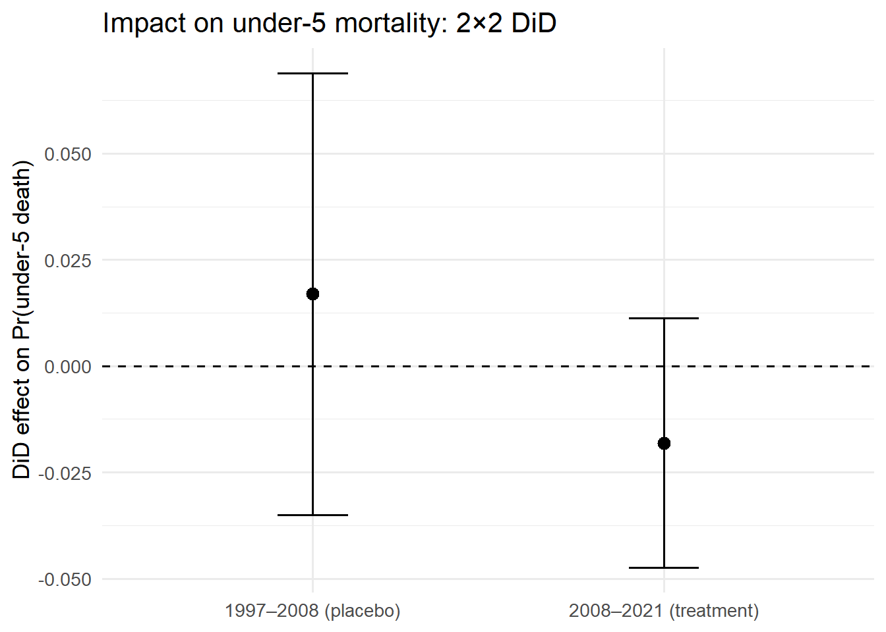
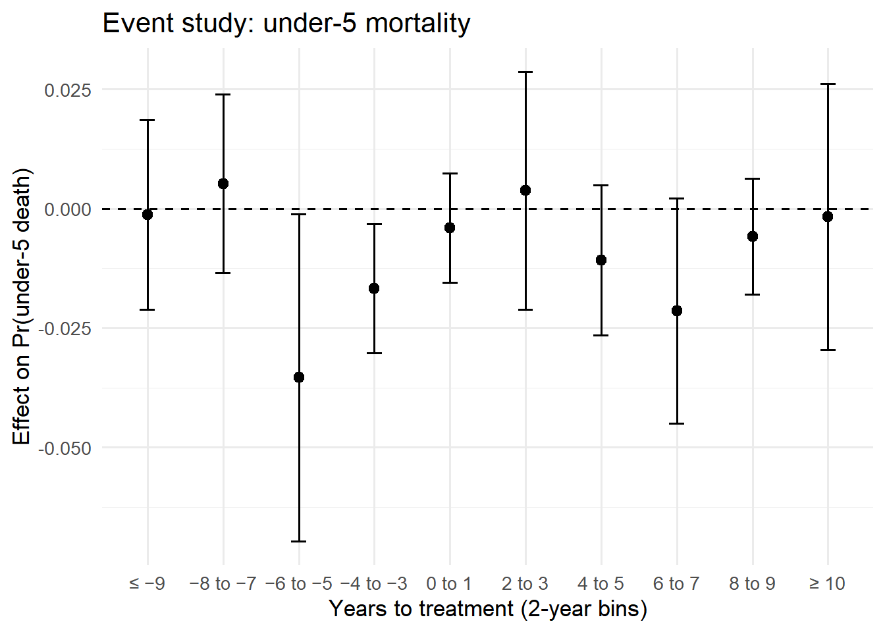
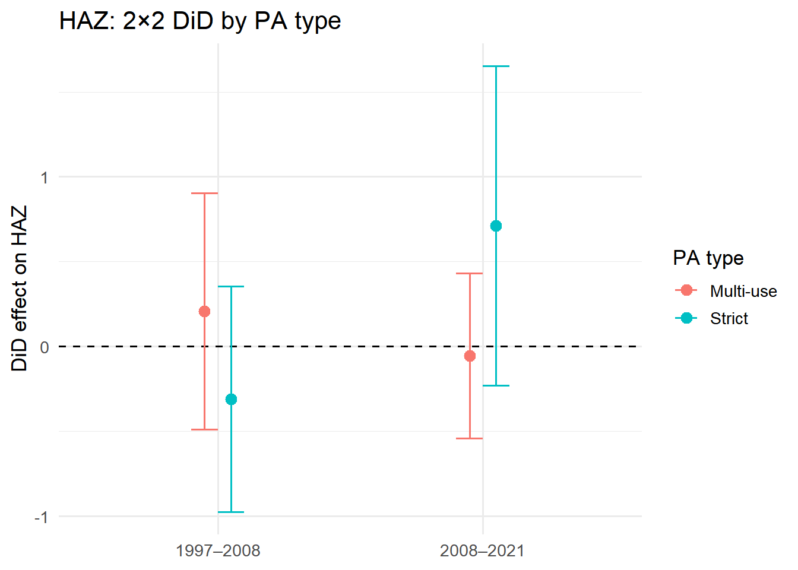
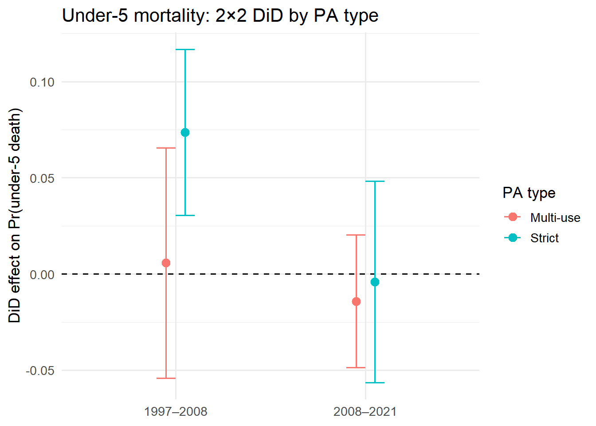
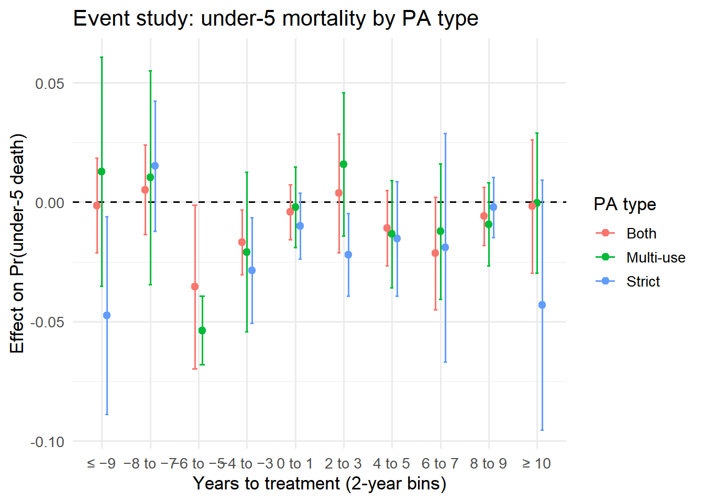

library(tidyverse)
library(haven)
library(fixest)
library(did2s)
library(modelsummary)
library(broom)
library(ggplot2)
library(gt)
library(sf)
options(scipen = 999)Child health outcomes: anthropometric z-scores and under-5 mortality
Motivation
The main analysis in ?@sec-estimation uses a composite wealth index as the outcome. While informative about general household well-being, this measure aggregates multiple asset dimensions and may mask specific channels through which protected areas affect local populations. In this chapter, we use child-level health outcomes — anthropometric z-scores and under-5 mortality — as alternative dependent variables. These outcomes offer several advantages:
Granularity: Children’s anthropometric measurements (height-for-age, weight-for-age) are individual-level continuous variables measured with standardized protocols, as opposed to the asset-based wealth index that is constructed at the household level.
More observations: Each matched household may contain multiple children under 5, increasing the effective sample size and potentially the statistical power of the analysis.
Direct welfare interpretation: Stunting (low height-for-age) and underweight (low weight-for-age) are direct measures of child well-being, reflecting nutritional intake and disease burden. Under-5 mortality is the most extreme welfare outcome.
Policy relevance: Child malnutrition and mortality are key indicators for SDG 2 (Zero Hunger) and SDG 3 (Good Health and Well-being), and are directly relevant to the debate on whether protected areas improve or worsen local welfare.
We follow the same identification strategy as the main analysis: we reuse the existing matched samples (genetic matching on cluster-level covariates) and estimate both 2×2 and staggered difference-in-differences models. The matching is not re-implemented; we join child-level survey data to the pre-existing matched household datasets.
Data availability summary
Anthropometric z-scores are only available in surveys that measured children’s height and weight:
| Year | Source | HAZ | WAZ/WHZ | Mortality | Matched children (anthro) | Matched births (mortality) |
|---|---|---|---|---|---|---|
| 1997 | DHS-III | ✓ | ✓ | ✓ | 396 | 478 |
| 2008 | DHS-V | ✓ (height only) | ✗ | ✓ | 875 | 2,223 |
| 2011 | MIS | ✗ | ✗ | ✓ | — | 926 |
| 2013 | MIS | ✗ | ✗ | ✓ | — | 1,356 |
| 2016 | MIS | ✗ | ✗ | ✓ | — | 1,163 |
| 2018 | MICS-6 | ✓ | ✓ | ✓ | 232 | 261 |
| 2021 | DHS-VIII | ✓ | ✓ | ✓ | 1,243 | 2,714 |
The MIS surveys (2011, 2013, 2016) did not include anthropometric measurements but do contain full birth histories (mortality data). The 2008 DHS measured height but not weight, so only HAZ is available for that year. Consequently:
- HAZ analysis: 4 time points (1997, 2008, 2018, 2021), ~2,746 observations.
- Under-5 mortality analysis: 7 time points, ~9,121 observations.
- For comparison, the household-level wealth analysis uses ~14,128 observations across all years.
Variable definitions
Height-for-age z-score (HAZ)
Height-for-age z-scores measure a child’s height relative to the WHO Child Growth Standards 2006 reference population of well-nourished children of the same age and sex. A HAZ below −2 SD indicates stunting (chronic malnutrition); below −3 SD indicates severe stunting.
DHS coding (source: DHS Guide to Statistics, Nutritional Status chapter):
- Variable
hc70(PR/HW file) orhw70(KR file): Height/Age standard deviation according to WHO 2006 standards. Stored as integer × 100 (e.g., −150 = −1.50 SD). Flag values: 9996 = height out of plausible limits, 9997 = age in days out of plausible limits, 9998 = flagged case, 9999 = missing. Valid z-scores are filtered to [−6, +6] SD. - For DHS-III (1997), z-scores based on WHO 2006 standards were retrospectively calculated and stored in the separate HW file (
MDHW31FL.DTA) ashc70. - For DHS-V onwards (2008, 2021),
hw70is included directly in the KR file.
MICS coding (Madagascar MICS-6, 2018):
- Variable
HAZ2: Height-for-age z-score according to WHO 2006 standards. Stored in standard units (e.g., −1.50). Values of 99.99 indicate missing/implausible data.HAZFLAG = 1indicates a flagged observation. Valid z-scores:HAZ2 < 90 & (HAZFLAG == 0 | is.na(HAZFLAG)).
Weight-for-age z-score (WAZ)
Weight-for-age z-scores measure a child’s weight relative to the WHO 2006 reference. A WAZ below −2 SD indicates underweight; below −3 SD indicates severe underweight. This is a composite indicator reflecting both chronic and acute malnutrition.
- DHS:
hw71(KR file) orhc71(PR/HW file). Same coding as HAZ. Available for 1997 and 2021 only (not measured in 2008 Madagascar DHS). - MICS:
WAZ2. Same coding asHAZ2.
Under-5 mortality
A binary indicator equal to 1 if a child born in the 5 years preceding the survey died before the interview, 0 otherwise. Since the DHS/MICS children’s recode (KR/bh) contains only births in the reference period (last 5 years), all deaths recorded (b5 = 0 in DHS, BH5 = 2 in MICS) are by construction under-5 deaths.
- DHS:
b5(child is alive: 1 = yes, 0 = no).b7= age at death in completed months (available in full DHS rounds, NA in MIS surveys). - MICS:
BH5(child alive: 1 = yes, 2 = no). Birth history file restricted to births in 2013–2018 for comparability with DHS 5-year window.
Data loading and harmonization
Load matched household data
load_matched <- function(path, year, spei_years) {
read_rds(path) |>
st_drop_geometry() |>
mutate(DHSYEAR = year) |>
rename(
spei_wc_n_2 = !!sym(paste0("spei_wc_", spei_years[1])),
spei_wc_n_1 = !!sym(paste0("spei_wc_", spei_years[2])),
spei_wc_n = !!sym(paste0("spei_wc_", spei_years[3]))
) |>
mutate(
hv219 = zap_labels(hv219),
hv220 = as.numeric(zap_labels(hv220))
) |>
filter(GROUP %in% c("Treatment", "Control")) |>
select(DHSYEAR, hv001, hv002, hv005, GROUP, WDPAID, STATUS_YR, IUCN_CAT,
treatment, weights, spei_wc_n_2, spei_wc_n_1, spei_wc_n, hv219, hv220)
}
matched_all <- bind_rows(
load_matched("data/derived/data_matched_1997.rds", 1997, c(1995, 1996, 1997)),
load_matched("data/derived/data_matched_2008.rds", 2008, c(2006, 2007, 2008)),
load_matched("data/derived/data_matched_2011.rds", 2011, c(2009, 2010, 2011)),
load_matched("data/derived/data_matched_2013.rds", 2013, c(2011, 2012, 2013)),
load_matched("data/derived/data_matched_2016.rds", 2016, c(2014, 2015, 2016)),
load_matched("data/derived/data_matched_2018.rds", 2018, c(2016, 2017, 2018)),
load_matched("data/derived/data_matched_2021.rds", 2021, c(2019, 2020, 2021))
)Load children’s survey data
DHS KR files (1997, 2008, 2011, 2013, 2016, 2021)
clean_z <- function(x) {
# DHS z-scores are stored as integers × 100; flag values 9996–9999
y <- ifelse(x %in% 9996:9999, NA_real_, as.numeric(x)) / 100
ifelse(!is.na(y) & (y < -6 | y > 6), NA_real_, y)
}
# 1997: HAZ and WAZ in separate HW file, joined by row order with KR
kr_1997 <- read_dta(
"data/raw/dhs/DHS_1997/MDKR31DT/MDKR31FL.DTA",
col_select = c(caseid, v001, v002, v005, b5, b7, b3, v008, b4)
)
hw_1997 <- read_dta("data/raw/dhs/DHS_1997/MDHW31DT/MDHW31FL.DTA") |>
select(hc70, hc71, hc72)
stopifnot(nrow(kr_1997) == nrow(hw_1997))
kr_1997 <- kr_1997 |>
bind_cols(hw_1997) |>
transmute(
v001, v002, v005,
DHSYEAR = 1997L,
child_sex = as.integer(b4), # 1 = male, 2 = female
child_alive = as.integer(b5), # 1 = alive, 0 = dead
age_death_months = as.numeric(b7),
haz = clean_z(hc70),
waz = clean_z(hc71),
whz = clean_z(hc72),
died = as.integer(b5 == 0)
)
# Helper for DHS years 2008+
load_kr <- function(path, year, has_waz = FALSE) {
cols <- c("v001", "v002", "v005", "b5", "b7", "b3", "v008", "b4", "hw70")
if (has_waz) cols <- c(cols, "hw71", "hw72")
kr <- read_dta(path, col_select = all_of(cols)) |>
mutate(
DHSYEAR = as.integer(year),
child_sex = as.integer(b4),
child_alive = as.integer(b5),
age_death_months = as.numeric(b7),
haz = clean_z(hw70),
died = as.integer(b5 == 0)
)
if (has_waz) {
kr <- kr |> mutate(waz = clean_z(hw71), whz = clean_z(hw72))
} else {
kr <- kr |> mutate(waz = NA_real_, whz = NA_real_)
}
kr |> select(v001, v002, v005, DHSYEAR, child_sex, child_alive,
age_death_months, haz, waz, whz, died)
}
kr_2008 <- load_kr("data/raw/dhs/DHS_2008/MDKR51DT/MDKR51FL.DTA", 2008, has_waz = FALSE)
kr_2011 <- load_kr("data/raw/dhs/DHS_2011/MDKR61DT/MDKR61FL.DTA", 2011, has_waz = FALSE)
kr_2013 <- load_kr("data/raw/dhs/DHS_2013/MDKR6ADT/MDKR6AFL.DTA", 2013, has_waz = FALSE)
kr_2016 <- load_kr("data/raw/dhs/DHS_2016/MDKR71DT/MDKR71FL.DTA", 2016, has_waz = FALSE)
kr_2021 <- load_kr("data/raw/dhs/DHS_2021/MDKR81DT/MDKR81FL.DTA", 2021, has_waz = TRUE)MICS 2018
# Anthropometrics from ch.sav (children measured 0–59 months)
mics_ch <- read_sav("data/raw/mics/2018/SPSS datasets/ch.sav",
col_select = c(HH1, HH2, HAZ2, WAZ2, WHZ2, HAZFLAG, WAZFLAG, WHZFLAG,
chweight, CAGE, HL4)) |>
transmute(
v001 = as.integer(HH1),
v002 = as.integer(HH2),
DHSYEAR = 2018L,
child_sex = as.integer(HL4), # 1 = male, 2 = female # 1 = male, 2 = female
haz = ifelse(!is.na(HAZ2) & HAZ2 < 90 & (HAZFLAG == 0 | is.na(HAZFLAG)),
HAZ2, NA_real_),
waz = ifelse(!is.na(WAZ2) & WAZ2 < 90 & (WAZFLAG == 0 | is.na(WAZFLAG)),
WAZ2, NA_real_),
whz = ifelse(!is.na(WHZ2) & WHZ2 < 90 & (WHZFLAG == 0 | is.na(WHZFLAG)),
WHZ2, NA_real_),
child_alive = 1L, # only living measured children in ch.sav
died = 0L,
age_death_months = NA_real_
)
# Mortality from bh.sav (birth history, restricted to last 5 years: 2013–2018)
mics_bh <- read_sav("data/raw/mics/2018/SPSS datasets/bh.sav",
col_select = c(HH1, HH2, BH5, BH9U, BH9N, BH4Y, BH3)) |>
filter(BH4Y >= 2013 & BH4Y <= 2018) |>
transmute(
v001 = as.integer(HH1),
v002 = as.integer(HH2),
DHSYEAR = 2018L,
child_sex = as.integer(BH3), # 1 = male, 2 = female
child_alive = as.integer(BH5 == 1),
died = as.integer(BH5 == 2),
age_death_months = case_when(
BH9U == 1 ~ BH9N / 30.4, # days → months
BH9U == 2 ~ as.numeric(BH9N),
BH9U == 3 ~ BH9N * 12,
TRUE ~ NA_real_
),
haz = NA_real_,
waz = NA_real_,
whz = NA_real_
)Combine and join with matched data
# --- Anthropometric dataset (HAZ) ---
# Years with HAZ data: 1997, 2008, 2018 (MICS ch), 2021
anthro_raw <- bind_rows(kr_1997, kr_2008, kr_2021, mics_ch) |>
filter(!is.na(haz))
dat_haz <- anthro_raw |>
inner_join(matched_all, by = c("DHSYEAR", "v001" = "hv001", "v002" = "hv002")) |>
mutate(
hv219 = factor(hv219, levels = c(1, 2), labels = c("Male", "Female")),
treat = as.integer(GROUP == "Treatment"),
w_svy = hv005 / 1e6,
w_all = w_svy * weights,
cluster_uid = interaction(DHSYEAR, v001, drop = TRUE),
child_sex_f = factor(child_sex, levels = c(1, 2), labels = c("Male", "Female")),
treat_on = as.integer(treatment > 0 & DHSYEAR >= STATUS_YR),
rel_year = if_else(STATUS_YR > 0, as.numeric(DHSYEAR - STATUS_YR), Inf)
)
# --- Mortality dataset ---
# All 7 years: DHS KR for 1997/2008/2011/2013/2016/2021 + MICS bh for 2018
mort_raw <- bind_rows(kr_1997, kr_2008, kr_2011, kr_2013, kr_2016, kr_2021, mics_bh)
dat_mort <- mort_raw |>
inner_join(matched_all, by = c("DHSYEAR", "v001" = "hv001", "v002" = "hv002")) |>
mutate(
hv219 = factor(hv219, levels = c(1, 2), labels = c("Male", "Female")),
treat = as.integer(GROUP == "Treatment"),
w_svy = hv005 / 1e6,
w_all = w_svy * weights,
cluster_uid = interaction(DHSYEAR, v001, drop = TRUE),
child_sex_f = factor(child_sex, levels = c(1, 2), labels = c("Male", "Female")),
treat_on = as.integer(treatment > 0 & DHSYEAR >= STATUS_YR),
rel_year = if_else(STATUS_YR > 0, as.numeric(DHSYEAR - STATUS_YR), Inf)
)
cat("HAZ dataset:", nrow(dat_haz), "children across", n_distinct(dat_haz$DHSYEAR), "years\n")HAZ dataset: 2746 children across 4 yearscat("Mortality dataset:", nrow(dat_mort), "births across", n_distinct(dat_mort$DHSYEAR), "years\n")Mortality dataset: 9121 births across 7 yearsDescriptive statistics
# HAZ summary by year and group
haz_desc <- dat_haz |>
summarise(
n = n(),
mean_haz = mean(haz, na.rm = TRUE),
sd_haz = sd(haz, na.rm = TRUE),
pct_stunted = mean(haz < -2, na.rm = TRUE) * 100,
.by = c(DHSYEAR, GROUP)
) |>
arrange(DHSYEAR, GROUP)
haz_desc# A tibble: 8 × 6
DHSYEAR GROUP n mean_haz sd_haz pct_stunted
<dbl> <chr> <int> <dbl> <dbl> <dbl>
1 1997 Control 190 -1.60 1.58 39.5
2 1997 Treatment 206 -1.99 1.39 54.4
3 2008 Control 432 -1.69 1.85 44.4
4 2008 Treatment 443 -1.92 1.88 53.3
5 2018 Control 121 -1.90 1.32 51.2
6 2018 Treatment 111 -1.79 1.20 45.0
7 2021 Control 605 -1.52 1.38 37.2
8 2021 Treatment 638 -1.65 1.35 39.8# Mortality summary by year and group
mort_desc <- dat_mort |>
summarise(
n_births = n(),
n_deaths = sum(died),
mortality_rate = mean(died) * 1000, # per 1,000 births
.by = c(DHSYEAR, GROUP)
) |>
arrange(DHSYEAR, GROUP)
mort_desc# A tibble: 14 × 5
DHSYEAR GROUP n_births n_deaths mortality_rate
<dbl> <chr> <int> <int> <dbl>
1 1997 Control 231 16 69.3
2 1997 Treatment 247 16 64.8
3 2008 Control 1104 53 48.0
4 2008 Treatment 1119 58 51.8
5 2011 Control 487 13 26.7
6 2011 Treatment 439 6 13.7
7 2013 Control 670 18 26.9
8 2013 Treatment 686 14 20.4
9 2016 Control 620 5 8.06
10 2016 Treatment 543 1 1.84
11 2018 Control 136 7 51.5
12 2018 Treatment 125 8 64
13 2021 Control 1332 89 66.8
14 2021 Treatment 1382 73 52.8 ggplot(dat_haz, aes(x = haz, fill = GROUP)) +
geom_density(alpha = 0.4) +
geom_vline(xintercept = -2, linetype = "dashed", colour = "red") +
facet_wrap(~DHSYEAR) +
labs(x = "Height-for-age z-score (HAZ)",
y = "Density",
fill = "Group",
title = "HAZ distributions by year and group",
caption = "Dashed line: stunting threshold (−2 SD)") +
theme_minimal(base_size = 13)
ggplot(mort_desc, aes(x = factor(DHSYEAR), y = mortality_rate, fill = GROUP)) +
geom_col(position = position_dodge(width = 0.7), width = 0.6) +
labs(x = "Survey year",
y = "Under-5 mortality rate (per 1,000 births)",
fill = "Group",
title = "Under-5 mortality by year and treatment status") +
theme_minimal(base_size = 13)
Height-for-age z-score (HAZ) analysis
2×2 DiD
We follow the same 2×2 DiD design as the main analysis: a placebo test (1997–2008) and the treatment estimation (2008–2021). The model is:
\[HAZ_{ict} = \alpha + \beta_1 \text{Treat}_c + \beta_2 \text{Post}_t + \delta (\text{Treat}_c \times \text{Post}_t) + \mathbf{X}_{ct}'\gamma + \varepsilon_{ict}\]
where \(i\) indexes children, \(c\) clusters, \(t\) survey rounds. Controls \(\mathbf{X}\) include SPEI values, household head sex and age, and child sex. Standard errors are clustered at the cluster-year level.
# Placebo 1997–2008
pre_haz <- dat_haz |>
filter(DHSYEAR %in% c(1997, 2008)) |>
mutate(post = as.integer(DHSYEAR == 2008),
treat_post = treat * post)
h_haz_pre <- feols(
haz ~ treat + post + treat_post + child_sex_f +
spei_wc_n_2 + spei_wc_n_1 + spei_wc_n + hv219 + hv220,
data = pre_haz, weights = ~w_all, cluster = ~cluster_uid
)
# Treatment 2008–2021
main_haz <- dat_haz |>
filter(DHSYEAR %in% c(2008, 2021)) |>
mutate(post = as.integer(DHSYEAR == 2021),
treat_post = treat * post)
h_haz_main <- feols(
haz ~ treat + post + treat_post + child_sex_f +
spei_wc_n_2 + spei_wc_n_1 + spei_wc_n + hv219 + hv220,
data = main_haz, weights = ~w_all, cluster = ~cluster_uid
)
etable(h_haz_pre, h_haz_main,
headers = c("Placebo 1997–2008", "Treatment 2008–2021")) h_haz_pre h_haz_main
Placebo 1997–2008 Treatment 2008–2021
Dependent Var.: haz haz
Constant -1.620*** (0.3323) -1.978*** (0.1955)
treat -0.4304 (0.2642) -0.2996 (0.1835)
post -0.3816 (0.3872) 0.6263** (0.1929)
treat_post 0.0766 (0.3191) 0.1244 (0.2150)
child_sex_fFemale 0.3502** (0.1168) 0.3023*** (0.0793)
spei_wc_n_2 0.0824 (0.2510) 0.1857 (0.1503)
spei_wc_n_1 -0.3256* (0.1453) -0.1253 (0.1083)
spei_wc_n 0.3543 (0.2872) 0.3706*** (0.0905)
hv219Female -0.0170 (0.1477) 0.0444 (0.0958)
hv220 0.0037 (0.0048) 0.0023 (0.0032)
_________________ __________________ __________________
S.E.: Clustered by: cluster_uid by: cluster_uid
Observations 1,271 2,118
R2 0.02676 0.02848
Adj. R2 0.01981 0.02433
---
Signif. codes: 0 '***' 0.001 '**' 0.01 '*' 0.05 '.' 0.1 ' ' 1did_row <- function(model, year_post, term = "treat_post") {
tidy(model) |>
filter(term == !!term) |>
transmute(year = year_post, estimate, se = std.error)
}
haz_2x2_df <- bind_rows(
did_row(h_haz_pre, 2008),
did_row(h_haz_main, 2021)
) |>
mutate(
period = factor(
ifelse(year == 2008, "1997–2008 (placebo)", "2008–2021 (treatment)"),
levels = c("1997–2008 (placebo)", "2008–2021 (treatment)")
),
lo = estimate - 1.96 * se,
hi = estimate + 1.96 * se
)
ggplot(haz_2x2_df, aes(x = period, y = estimate)) +
geom_hline(yintercept = 0, linetype = "dashed") +
geom_errorbar(aes(ymin = lo, ymax = hi), width = 0.2) +
geom_point(size = 3) +
labs(x = NULL, y = "DiD effect on HAZ (SD units)",
title = "Impact on child stunting: 2×2 DiD") +
theme_minimal(base_size = 13)
Staggered DiD — static estimation
We use the Gardner (2022) two-stage DiD estimator (did2s) to leverage all available years with HAZ data (1997, 2008, 2018, 2021). This estimator is robust to heterogeneous treatment effects and staggered adoption.
# Prepare relative year bins (same scheme as main analysis)
dat_haz2 <- dat_haz |>
mutate(
rel_year_clipped = case_when(
is.infinite(rel_year) ~ NA_real_,
TRUE ~ pmax(pmin(rel_year, 10), -10)
),
rel_year_2yr = case_when(
is.na(rel_year_clipped) ~ NA_integer_,
rel_year_clipped <= -9 ~ -5L,
rel_year_clipped <= -7 ~ -4L,
rel_year_clipped <= -5 ~ -3L,
rel_year_clipped <= -3 ~ -2L,
rel_year_clipped <= -1 ~ -1L,
rel_year_clipped <= 1 ~ 0L,
rel_year_clipped <= 3 ~ 1L,
rel_year_clipped <= 5 ~ 2L,
rel_year_clipped <= 7 ~ 3L,
rel_year_clipped <= 9 ~ 4L,
TRUE ~ 5L
),
rel_year_2yr2 = case_when(
is.na(rel_year_2yr) ~ "never",
TRUE ~ as.character(rel_year_2yr)
),
rel_year_2yr2 = factor(
rel_year_2yr2,
levels = c("-5", "-4", "-3", "-2", "-1", "0", "1", "2", "3", "4", "5", "never")
)
)
did2s_haz_static <- did2s(
data = dat_haz2,
yname = "haz",
first_stage = ~ child_sex_f + spei_wc_n_2 + spei_wc_n_1 + spei_wc_n + hv219 + hv220 | DHSYEAR,
second_stage = ~ i(treat_on, ref = FALSE),
treatment = "treat_on",
cluster_var = "cluster_uid",
weights = "w_all"
)
modelsummary(list("did2s HAZ (static)" = did2s_haz_static))| did2s HAZ (static) | |
|---|---|
| treat_on = 1 | -0.094 |
| (0.094) | |
| Num.Obs. | 2746 |
| R2 | 0.000 |
| R2 Adj. | 0.000 |
| AIC | 10185.5 |
| BIC | 10191.4 |
| RMSE | 1.55 |
| Std.Errors | Corrected Clustered (cluster_uid) |
Staggered DiD — event study
did2s_haz_es <- did2s(
data = dat_haz2,
yname = "haz",
first_stage = ~ child_sex_f + spei_wc_n_2 + spei_wc_n_1 + spei_wc_n + hv219 + hv220 | DHSYEAR,
second_stage = ~ i(rel_year_2yr2, ref = c("-1", "never")),
treatment = "treat_on",
cluster_var = "v001",
weights = "w_all"
)
etable(did2s_haz_es, headers = "did2s HAZ event-study (2-yr bins)") did2s_haz_es
did2s HAZ event-study (2-yr bins)
Dependent Var.: haz
rel_year_2yr2 = -5 -0.1573 (0.1167)
rel_year_2yr2 = -4 -0.2320 (0.1410)
rel_year_2yr2 = -3 -1.943*** (0.1234)
rel_year_2yr2 = -2 1.082 (0.6827)
rel_year_2yr2 = 0 -0.1848 (0.2180)
rel_year_2yr2 = 1 -0.1872 (0.2556)
rel_year_2yr2 = 2 -0.1653 (0.2485)
rel_year_2yr2 = 3 0.0717 (0.1378)
rel_year_2yr2 = 4 -0.3528 (0.3906)
rel_year_2yr2 = 5 -0.2165. (0.1232)
__________________ __________________
S.E.: Clustered by: v001
Observations 2,746
R2 0.01299
Adj. R2 0.00974
---
Signif. codes: 0 '***' 0.001 '**' 0.01 '*' 0.05 '.' 0.1 ' ' 1bin_label <- function(k) {
dplyr::case_when(
is.na(k) ~ NA_character_,
k == "-5" ~ "≤ −9",
k == "-4" ~ "−8 to −7",
k == "-3" ~ "−6 to −5",
k == "-2" ~ "−4 to −3",
k == "-1" ~ "−2 to −1",
k == "0" ~ "0 to 1",
k == "1" ~ "2 to 3",
k == "2" ~ "4 to 5",
k == "3" ~ "6 to 7",
k == "4" ~ "8 to 9",
k == "5" ~ "≥ 10",
TRUE ~ as.character(k)
)
}
es_haz_df <- tidy(did2s_haz_es, conf.int = TRUE) |>
filter(grepl("^rel_year_2yr2::", term)) |>
mutate(
k = sub("^rel_year_2yr2::", "", term),
k = factor(k, levels = c("-5", "-4", "-3", "-2", "0", "1", "2", "3", "4", "5"))
) |>
arrange(k)
ggplot(es_haz_df, aes(k, estimate)) +
geom_hline(yintercept = 0, linetype = "dashed") +
geom_point(size = 2.5) +
geom_errorbar(aes(ymin = conf.low, ymax = conf.high), width = 0.2) +
labs(x = "Years to treatment (2-year bins)",
y = "Effect on HAZ (SD units)",
title = "Event study: height-for-age z-score") +
scale_x_discrete(labels = bin_label) +
theme_minimal(base_size = 13)
Under-5 mortality analysis
2×2 DiD
The outcome is a binary indicator (linear probability model). The coefficient \(\delta\) estimates the change in the probability of under-5 death attributable to PA establishment.
\[\text{Died}_{ict} = \alpha + \beta_1 \text{Treat}_c + \beta_2 \text{Post}_t + \delta (\text{Treat}_c \times \text{Post}_t) + \mathbf{X}_{ct}'\gamma + \varepsilon_{ict}\]
# Placebo 1997–2008
pre_mort <- dat_mort |>
filter(DHSYEAR %in% c(1997, 2008)) |>
mutate(post = as.integer(DHSYEAR == 2008),
treat_post = treat * post)
h_mort_pre <- feols(
died ~ treat + post + treat_post + child_sex_f +
spei_wc_n_2 + spei_wc_n_1 + spei_wc_n + hv219 + hv220,
data = pre_mort, weights = ~w_all, cluster = ~cluster_uid
)
# Treatment 2008–2021
main_mort <- dat_mort |>
filter(DHSYEAR %in% c(2008, 2021)) |>
mutate(post = as.integer(DHSYEAR == 2021),
treat_post = treat * post)
h_mort_main <- feols(
died ~ treat + post + treat_post + child_sex_f +
spei_wc_n_2 + spei_wc_n_1 + spei_wc_n + hv219 + hv220,
data = main_mort, weights = ~w_all, cluster = ~cluster_uid
)
etable(h_mort_pre, h_mort_main,
headers = c("Placebo 1997–2008", "Treatment 2008–2021")) h_mort_pre h_mort_main
Placebo 1997–2008 Treatment 2008–2021
Dependent Var.: died died
Constant 0.0263 (0.0251) 0.0069 (0.0118)
treat -0.0086 (0.0248) 0.0070 (0.0098)
post -0.0286 (0.0227) 0.0378. (0.0193)
treat_post 0.0169 (0.0265) -0.0181 (0.0150)
child_sex_fFemale 0.0035 (0.0101) -0.0094 (0.0083)
spei_wc_n_2 0.0125 (0.0167) 0.0312* (0.0141)
spei_wc_n_1 0.0025 (0.0095) -0.0030 (0.0085)
spei_wc_n 0.0152 (0.0155) 0.0027 (0.0103)
hv219Female 0.0050 (0.0167) -0.0153 (0.0100)
hv220 0.0011** (0.0004) 0.0010*** (0.0003)
_________________ _________________ __________________
S.E.: Clustered by: cluster_uid by: cluster_uid
Observations 2,701 4,937
R2 0.00607 0.00722
Adj. R2 0.00275 0.00541
---
Signif. codes: 0 '***' 0.001 '**' 0.01 '*' 0.05 '.' 0.1 ' ' 1mort_2x2_df <- bind_rows(
did_row(h_mort_pre, 2008),
did_row(h_mort_main, 2021)
) |>
mutate(
period = factor(
ifelse(year == 2008, "1997–2008 (placebo)", "2008–2021 (treatment)"),
levels = c("1997–2008 (placebo)", "2008–2021 (treatment)")
),
lo = estimate - 1.96 * se,
hi = estimate + 1.96 * se
)
ggplot(mort_2x2_df, aes(x = period, y = estimate)) +
geom_hline(yintercept = 0, linetype = "dashed") +
geom_errorbar(aes(ymin = lo, ymax = hi), width = 0.2) +
geom_point(size = 3) +
labs(x = NULL, y = "DiD effect on Pr(under-5 death)",
title = "Impact on under-5 mortality: 2×2 DiD") +
theme_minimal(base_size = 13)
Staggered DiD — static estimation
With 7 time points for mortality, the staggered approach can leverage the full variation in treatment timing across PA cohorts.
dat_mort2 <- dat_mort |>
mutate(
rel_year_clipped = case_when(
is.infinite(rel_year) ~ NA_real_,
TRUE ~ pmax(pmin(rel_year, 10), -10)
),
rel_year_2yr = case_when(
is.na(rel_year_clipped) ~ NA_integer_,
rel_year_clipped <= -9 ~ -5L,
rel_year_clipped <= -7 ~ -4L,
rel_year_clipped <= -5 ~ -3L,
rel_year_clipped <= -3 ~ -2L,
rel_year_clipped <= -1 ~ -1L,
rel_year_clipped <= 1 ~ 0L,
rel_year_clipped <= 3 ~ 1L,
rel_year_clipped <= 5 ~ 2L,
rel_year_clipped <= 7 ~ 3L,
rel_year_clipped <= 9 ~ 4L,
TRUE ~ 5L
),
rel_year_2yr2 = case_when(
is.na(rel_year_2yr) ~ "never",
TRUE ~ as.character(rel_year_2yr)
),
rel_year_2yr2 = factor(
rel_year_2yr2,
levels = c("-5", "-4", "-3", "-2", "-1", "0", "1", "2", "3", "4", "5", "never")
)
)
did2s_mort_static <- did2s(
data = dat_mort2,
yname = "died",
first_stage = ~ child_sex_f + spei_wc_n_2 + spei_wc_n_1 + spei_wc_n + hv219 + hv220 | DHSYEAR,
second_stage = ~ i(treat_on, ref = FALSE),
treatment = "treat_on",
cluster_var = "cluster_uid",
weights = "w_all"
)
modelsummary(list("did2s Mortality (static)" = did2s_mort_static))| did2s Mortality (static) | |
|---|---|
| treat_on = 1 | -0.009 |
| (0.006) | |
| Num.Obs. | 9121 |
| R2 | 0.000 |
| R2 Adj. | 0.000 |
| AIC | -3653.4 |
| BIC | -3646.3 |
| RMSE | 0.20 |
| Std.Errors | Corrected Clustered (cluster_uid) |
Staggered DiD — event study
did2s_mort_es <- did2s(
data = dat_mort2,
yname = "died",
first_stage = ~ child_sex_f + spei_wc_n_2 + spei_wc_n_1 + spei_wc_n + hv219 + hv220 | DHSYEAR,
second_stage = ~ i(rel_year_2yr2, ref = c("-1", "never")),
treatment = "treat_on",
cluster_var = "v001",
weights = "w_all"
)
etable(did2s_mort_es, headers = "did2s Mortality event-study (2-yr bins)") did2s_mort_es
did2s Mortality event-study (2-yr bins)
Dependent Var.: died
rel_year_2yr2 = -5 -0.0013 (0.0101)
rel_year_2yr2 = -4 0.0052 (0.0095)
rel_year_2yr2 = -3 -0.0354* (0.0175)
rel_year_2yr2 = -2 -0.0167* (0.0069)
rel_year_2yr2 = 0 -0.0041 (0.0059)
rel_year_2yr2 = 1 0.0037 (0.0127)
rel_year_2yr2 = 2 -0.0108 (0.0080)
rel_year_2yr2 = 3 -0.0214. (0.0120)
rel_year_2yr2 = 4 -0.0059 (0.0062)
rel_year_2yr2 = 5 -0.0017 (0.0142)
__________________ _________________
S.E.: Clustered by: v001
Observations 9,121
R2 0.00147
Adj. R2 0.00048
---
Signif. codes: 0 '***' 0.001 '**' 0.01 '*' 0.05 '.' 0.1 ' ' 1es_mort_df <- tidy(did2s_mort_es, conf.int = TRUE) |>
filter(grepl("^rel_year_2yr2::", term)) |>
mutate(
k = sub("^rel_year_2yr2::", "", term),
k = factor(k, levels = c("-5", "-4", "-3", "-2", "0", "1", "2", "3", "4", "5"))
) |>
arrange(k)
ggplot(es_mort_df, aes(k, estimate)) +
geom_hline(yintercept = 0, linetype = "dashed") +
geom_point(size = 2.5) +
geom_errorbar(aes(ymin = conf.low, ymax = conf.high), width = 0.2) +
labs(x = "Years to treatment (2-year bins)",
y = "Effect on Pr(under-5 death)",
title = "Event study: under-5 mortality") +
scale_x_discrete(labels = bin_label) +
theme_minimal(base_size = 13)
Heterogeneity by IUCN category
We test whether effects differ between strict PAs (IUCN I–IV) and multi-use PAs (IUCN V–VI), following the same approach as the main analysis (H3).
is_strict <- function(x) x %in% c("Ia", "Ib", "II", "III", "IV")
is_multi <- function(x) x %in% c("V", "VI")HAZ by PA type — 2×2 DiD
dat_haz3 <- dat_haz |>
mutate(
treat_strict = as.integer(GROUP == "Treatment" & is_strict(IUCN_CAT)),
treat_multi = as.integer(GROUP == "Treatment" & is_multi(IUCN_CAT))
)
# Placebo strict
pre_strict_haz <- dat_haz3 |>
filter(DHSYEAR %in% c(1997, 2008), treat_strict == 1 | GROUP == "Control") |>
mutate(post = as.integer(DHSYEAR == 2008))
m_pre_strict_haz <- feols(
haz ~ treat_strict + post + treat_strict:post + child_sex_f +
spei_wc_n_2 + spei_wc_n_1 + spei_wc_n + hv219 + hv220,
data = pre_strict_haz, weights = ~w_all, cluster = ~v001
)
# Placebo multi
pre_multi_haz <- dat_haz3 |>
filter(DHSYEAR %in% c(1997, 2008), treat_multi == 1 | GROUP == "Control") |>
mutate(post = as.integer(DHSYEAR == 2008))
m_pre_multi_haz <- feols(
haz ~ treat_multi + post + treat_multi:post + child_sex_f +
spei_wc_n_2 + spei_wc_n_1 + spei_wc_n + hv219 + hv220,
data = pre_multi_haz, weights = ~w_all, cluster = ~v001
)
# Treatment strict
main_strict_haz <- dat_haz3 |>
filter(DHSYEAR %in% c(2008, 2021), treat_strict == 1 | GROUP == "Control") |>
mutate(post = as.integer(DHSYEAR == 2021))
m_main_strict_haz <- feols(
haz ~ treat_strict + post + treat_strict:post + child_sex_f +
spei_wc_n_2 + spei_wc_n_1 + spei_wc_n + hv219 + hv220,
data = main_strict_haz, weights = ~w_all, cluster = ~v001
)
# Treatment multi
main_multi_haz <- dat_haz3 |>
filter(DHSYEAR %in% c(2008, 2021), treat_multi == 1 | GROUP == "Control") |>
mutate(post = as.integer(DHSYEAR == 2021))
m_main_multi_haz <- feols(
haz ~ treat_multi + post + treat_multi:post + child_sex_f +
spei_wc_n_2 + spei_wc_n_1 + spei_wc_n + hv219 + hv220,
data = main_multi_haz, weights = ~w_all, cluster = ~v001
)
etable(m_pre_strict_haz, m_main_strict_haz, m_pre_multi_haz, m_main_multi_haz,
headers = c("Strict plac.", "Strict treat.", "Multi plac.", "Multi treat.")) m_pre_strict_haz m_main_strict_haz m_pre_multi_haz
Strict plac. Strict treat. Multi plac.
Dependent Var.: haz haz haz
Constant -1.706*** (0.3889) -2.119*** (0.2242) -1.523*** (0.3661)
treat_strict -0.2483 (0.2807) -0.4556. (0.2737)
post -0.4340 (0.4318) 0.5734* (0.2359) -0.4532 (0.4234)
child_sex_fFemale 0.3971* (0.1633) 0.3340** (0.1081) 0.3905** (0.1318)
spei_wc_n_2 -0.0696 (0.3321) 0.3616 (0.2358) 0.1479 (0.2816)
spei_wc_n_1 -0.4102* (0.1848) -0.2081 (0.1442) -0.3331. (0.1816)
spei_wc_n 0.3935 (0.3509) 0.3046* (0.1475) 0.4671 (0.3217)
hv219Female -0.0931 (0.2268) -0.0485 (0.1373) 0.0041 (0.1763)
hv220 0.0082 (0.0070) 0.0057 (0.0043) 0.0011 (0.0048)
treat_strict x post -0.3099 (0.3394) 0.7112 (0.4808)
treat_multi -0.4917. (0.2908)
treat_multi x post 0.2091 (0.3551)
___________________ __________________ __________________ __________________
S.E.: Clustered by: v001 by: v001 by: v001
Observations 731 1,188 1,075
R2 0.02857 0.02635 0.02544
Adj. R2 0.01644 0.01891 0.01720
m_main_multi_haz
Multi treat.
Dependent Var.: haz
Constant -1.949*** (0.1979)
treat_strict
post 0.5696** (0.2015)
child_sex_fFemale 0.3426*** (0.0929)
spei_wc_n_2 0.2239 (0.1976)
spei_wc_n_1 -0.0316 (0.1254)
spei_wc_n 0.3012** (0.1069)
hv219Female 0.0065 (0.1103)
hv220 0.0011 (0.0034)
treat_strict x post
treat_multi -0.2274 (0.2104)
treat_multi x post -0.0532 (0.2481)
___________________ __________________
S.E.: Clustered by: v001
Observations 1,737
R2 0.02713
Adj. R2 0.02206
---
Signif. codes: 0 '***' 0.001 '**' 0.01 '*' 0.05 '.' 0.1 ' ' 1haz_iucn_df <- bind_rows(
did_row(m_pre_strict_haz, 2008, "treat_strict:post") |> mutate(type = "Strict"),
did_row(m_main_strict_haz, 2021, "treat_strict:post") |> mutate(type = "Strict"),
did_row(m_pre_multi_haz, 2008, "treat_multi:post") |> mutate(type = "Multi-use"),
did_row(m_main_multi_haz, 2021, "treat_multi:post") |> mutate(type = "Multi-use")
) |>
mutate(
period = factor(ifelse(year == 2008, "1997–2008", "2008–2021"),
levels = c("1997–2008", "2008–2021")),
lo = estimate - 1.96 * se,
hi = estimate + 1.96 * se
)
pd <- position_dodge(width = 0.2)
ggplot(haz_iucn_df, aes(x = period, y = estimate, colour = type)) +
geom_hline(yintercept = 0, linetype = "dashed") +
geom_point(size = 3, position = pd) +
geom_errorbar(aes(ymin = lo, ymax = hi), width = 0.2, position = pd) +
labs(x = NULL, y = "DiD effect on HAZ",
colour = "PA type",
title = "HAZ: 2×2 DiD by PA type") +
theme_minimal(base_size = 13)
HAZ by PA type — staggered static
d_strict_haz <- dat_haz2 |>
mutate(treat_on = as.integer(GROUP == "Treatment" & is_strict(IUCN_CAT))) |>
filter(treat_on == 1 | GROUP == "Control")
did2s_haz_strict <- did2s(
data = d_strict_haz,
yname = "haz",
first_stage = ~ child_sex_f + spei_wc_n_2 + spei_wc_n_1 + spei_wc_n + hv219 + hv220 | DHSYEAR,
second_stage = ~ i(treat_on, ref = FALSE),
treatment = "treat_on",
cluster_var = "cluster_uid",
weights = "w_all"
)
d_multi_haz <- dat_haz2 |>
mutate(treat_on = as.integer(GROUP == "Treatment" & is_multi(IUCN_CAT))) |>
filter(treat_on == 1 | GROUP == "Control")
did2s_haz_multi <- did2s(
data = d_multi_haz,
yname = "haz",
first_stage = ~ child_sex_f + spei_wc_n_2 + spei_wc_n_1 + spei_wc_n + hv219 + hv220 | DHSYEAR,
second_stage = ~ i(treat_on, ref = FALSE),
treatment = "treat_on",
cluster_var = "cluster_uid",
weights = "w_all"
)
modelsummary(list(
"HAZ Strict" = did2s_haz_strict,
"HAZ Multi" = did2s_haz_multi,
"HAZ Both" = did2s_haz_static
))| HAZ Strict | HAZ Multi | HAZ Both | |
|---|---|---|---|
| treat_on = 1 | -0.112 | -0.261 | -0.094 |
| (0.215) | (0.103) | (0.094) | |
| Num.Obs. | 1548 | 2276 | 2746 |
| R2 | -0.000 | 0.006 | 0.000 |
| R2 Adj. | -0.000 | 0.006 | 0.000 |
| AIC | 5758.1 | 8476.2 | 10185.5 |
| BIC | 5763.4 | 8481.9 | 10191.4 |
| RMSE | 1.55 | 1.56 | 1.55 |
| Std.Errors | Corrected Clustered (cluster_uid) | Corrected Clustered (cluster_uid) | Corrected Clustered (cluster_uid) |
Mortality by PA type — 2×2 DiD
dat_mort3 <- dat_mort |>
mutate(
treat_strict = as.integer(GROUP == "Treatment" & is_strict(IUCN_CAT)),
treat_multi = as.integer(GROUP == "Treatment" & is_multi(IUCN_CAT))
)
# Placebo strict
pre_strict_mort <- dat_mort3 |>
filter(DHSYEAR %in% c(1997, 2008), treat_strict == 1 | GROUP == "Control") |>
mutate(post = as.integer(DHSYEAR == 2008))
m_pre_strict_mort <- feols(
died ~ treat_strict + post + treat_strict:post + child_sex_f +
spei_wc_n_2 + spei_wc_n_1 + spei_wc_n + hv219 + hv220,
data = pre_strict_mort, weights = ~w_all, cluster = ~v001
)
# Placebo multi
pre_multi_mort <- dat_mort3 |>
filter(DHSYEAR %in% c(1997, 2008), treat_multi == 1 | GROUP == "Control") |>
mutate(post = as.integer(DHSYEAR == 2008))
m_pre_multi_mort <- feols(
died ~ treat_multi + post + treat_multi:post + child_sex_f +
spei_wc_n_2 + spei_wc_n_1 + spei_wc_n + hv219 + hv220,
data = pre_multi_mort, weights = ~w_all, cluster = ~v001
)
# Treatment strict
main_strict_mort <- dat_mort3 |>
filter(DHSYEAR %in% c(2008, 2021), treat_strict == 1 | GROUP == "Control") |>
mutate(post = as.integer(DHSYEAR == 2021))
m_main_strict_mort <- feols(
died ~ treat_strict + post + treat_strict:post + child_sex_f +
spei_wc_n_2 + spei_wc_n_1 + spei_wc_n + hv219 + hv220,
data = main_strict_mort, weights = ~w_all, cluster = ~v001
)
# Treatment multi
main_multi_mort <- dat_mort3 |>
filter(DHSYEAR %in% c(2008, 2021), treat_multi == 1 | GROUP == "Control") |>
mutate(post = as.integer(DHSYEAR == 2021))
m_main_multi_mort <- feols(
died ~ treat_multi + post + treat_multi:post + child_sex_f +
spei_wc_n_2 + spei_wc_n_1 + spei_wc_n + hv219 + hv220,
data = main_multi_mort, weights = ~w_all, cluster = ~v001
)
etable(m_pre_strict_mort, m_main_strict_mort, m_pre_multi_mort, m_main_multi_mort,
headers = c("Strict plac.", "Strict treat.", "Multi plac.", "Multi treat.")) m_pre_strict_mort m_main_strict_mort m_pre_multi_mort
Strict plac. Strict treat. Multi plac.
Dependent Var.: died died died
Constant -0.0020 (0.0314) -0.0198 (0.0168) 0.0139 (0.0276)
treat_strict -0.0549** (0.0180) 0.0069 (0.0136)
post -0.0108 (0.0292) 0.0522* (0.0255) -0.0190 (0.0247)
child_sex_fFemale 0.0046 (0.0141) -0.0018 (0.0122) 0.0016 (0.0113)
spei_wc_n_2 0.0068 (0.0195) 0.0493* (0.0221) 0.0048 (0.0193)
spei_wc_n_1 0.0156 (0.0130) -0.0052 (0.0106) 0.0055 (0.0112)
spei_wc_n 0.0017 (0.0228) 0.0097 (0.0153) 0.0041 (0.0177)
hv219Female 0.0194 (0.0241) -0.0109 (0.0152) -0.0016 (0.0179)
hv220 0.0014* (0.0006) 0.0015*** (0.0004) 0.0013** (0.0004)
treat_strict x post 0.0737** (0.0220) -0.0041 (0.0267)
treat_multi 0.0046 (0.0284)
treat_multi x post 0.0057 (0.0306)
___________________ __________________ __________________ _________________
S.E.: Clustered by: v001 by: v001 by: v001
Observations 1,546 2,794 2,262
R2 0.01150 0.01286 0.00826
Adj. R2 0.00571 0.00967 0.00430
m_main_multi_mort
Multi treat.
Dependent Var.: died
Constant -0.0036 (0.0135)
treat_strict
post 0.0392. (0.0214)
child_sex_fFemale -0.0077 (0.0097)
spei_wc_n_2 0.0267 (0.0188)
spei_wc_n_1 -0.0013 (0.0101)
spei_wc_n 0.0051 (0.0128)
hv219Female -0.0258* (0.0105)
hv220 0.0014*** (0.0003)
treat_strict x post
treat_multi 0.0090 (0.0120)
treat_multi x post -0.0142 (0.0176)
___________________ __________________
S.E.: Clustered by: v001
Observations 4,021
R2 0.00975
Adj. R2 0.00752
---
Signif. codes: 0 '***' 0.001 '**' 0.01 '*' 0.05 '.' 0.1 ' ' 1mort_iucn_df <- bind_rows(
did_row(m_pre_strict_mort, 2008, "treat_strict:post") |> mutate(type = "Strict"),
did_row(m_main_strict_mort, 2021, "treat_strict:post") |> mutate(type = "Strict"),
did_row(m_pre_multi_mort, 2008, "treat_multi:post") |> mutate(type = "Multi-use"),
did_row(m_main_multi_mort, 2021, "treat_multi:post") |> mutate(type = "Multi-use")
) |>
mutate(
period = factor(ifelse(year == 2008, "1997–2008", "2008–2021"),
levels = c("1997–2008", "2008–2021")),
lo = estimate - 1.96 * se,
hi = estimate + 1.96 * se
)
ggplot(mort_iucn_df, aes(x = period, y = estimate, colour = type)) +
geom_hline(yintercept = 0, linetype = "dashed") +
geom_point(size = 3, position = pd) +
geom_errorbar(aes(ymin = lo, ymax = hi), width = 0.2, position = pd) +
labs(x = NULL, y = "DiD effect on Pr(under-5 death)",
colour = "PA type",
title = "Under-5 mortality: 2×2 DiD by PA type") +
theme_minimal(base_size = 13)
Mortality by PA type — staggered static
d_strict_mort <- dat_mort2 |>
mutate(treat_on = as.integer(GROUP == "Treatment" & is_strict(IUCN_CAT))) |>
filter(treat_on == 1 | GROUP == "Control")
did2s_mort_strict <- did2s(
data = d_strict_mort,
yname = "died",
first_stage = ~ child_sex_f + spei_wc_n_2 + spei_wc_n_1 + spei_wc_n + hv219 + hv220 | DHSYEAR,
second_stage = ~ i(treat_on, ref = FALSE),
treatment = "treat_on",
cluster_var = "cluster_uid",
weights = "w_all"
)
d_multi_mort <- dat_mort2 |>
mutate(treat_on = as.integer(GROUP == "Treatment" & is_multi(IUCN_CAT))) |>
filter(treat_on == 1 | GROUP == "Control")
did2s_mort_multi <- did2s(
data = d_multi_mort,
yname = "died",
first_stage = ~ child_sex_f + spei_wc_n_2 + spei_wc_n_1 + spei_wc_n + hv219 + hv220 | DHSYEAR,
second_stage = ~ i(treat_on, ref = FALSE),
treatment = "treat_on",
cluster_var = "cluster_uid",
weights = "w_all"
)
modelsummary(list(
"Mortality Strict" = did2s_mort_strict,
"Mortality Multi" = did2s_mort_multi,
"Mortality Both" = did2s_mort_static
))| Mortality Strict | Mortality Multi | Mortality Both | |
|---|---|---|---|
| treat_on = 1 | -0.013 | -0.002 | -0.009 |
| (0.008) | (0.006) | (0.006) | |
| Num.Obs. | 5272 | 7094 | 9121 |
| R2 | 0.000 | -0.000 | 0.000 |
| R2 Adj. | 0.000 | -0.000 | 0.000 |
| AIC | -2022.5 | -2211.1 | -3653.4 |
| BIC | -2015.9 | -2204.3 | -3646.3 |
| RMSE | 0.20 | 0.21 | 0.20 |
| Std.Errors | Corrected Clustered (cluster_uid) | Corrected Clustered (cluster_uid) | Corrected Clustered (cluster_uid) |
Mortality by PA type — event study
d_strict_mort_es <- dat_mort2 |>
mutate(treat_on = as.integer(GROUP == "Treatment" & is_strict(IUCN_CAT))) |>
filter(treat_on == 1 | GROUP == "Control")
did2s_mort_es_strict <- did2s(
data = d_strict_mort_es,
yname = "died",
first_stage = ~ child_sex_f + spei_wc_n_2 + spei_wc_n_1 + spei_wc_n + hv219 + hv220 | DHSYEAR,
second_stage = ~ i(rel_year_2yr2, ref = c("-1", "never")),
treatment = "treat_on",
cluster_var = "v001",
weights = "w_all"
)
d_multi_mort_es <- dat_mort2 |>
mutate(treat_on = as.integer(GROUP == "Treatment" & is_multi(IUCN_CAT))) |>
filter(treat_on == 1 | GROUP == "Control")
did2s_mort_es_multi <- did2s(
data = d_multi_mort_es,
yname = "died",
first_stage = ~ child_sex_f + spei_wc_n_2 + spei_wc_n_1 + spei_wc_n + hv219 + hv220 | DHSYEAR,
second_stage = ~ i(rel_year_2yr2, ref = c("-1", "never")),
treatment = "treat_on",
cluster_var = "v001",
weights = "w_all"
)
# Combined event-study plot
tidy_es <- function(mod, type) {
tidy(mod, conf.int = TRUE) |>
filter(grepl("^rel_year_2yr2::", term)) |>
mutate(
k = sub("^rel_year_2yr2::", "", term),
k = factor(k, levels = c("-5", "-4", "-3", "-2", "0", "1", "2", "3", "4", "5")),
type = type
) |>
arrange(k)
}
es_mort_iucn <- bind_rows(
tidy_es(did2s_mort_es_strict, "Strict"),
tidy_es(did2s_mort_es_multi, "Multi-use"),
tidy_es(did2s_mort_es, "Both")
)
pd2 <- position_dodge(width = 0.3)
ggplot(es_mort_iucn, aes(k, estimate, colour = type)) +
geom_hline(yintercept = 0, linetype = "dashed") +
geom_point(position = pd2, size = 2) +
geom_errorbar(aes(ymin = conf.low, ymax = conf.high), width = 0.2, position = pd2) +
labs(x = "Years to treatment (2-year bins)",
y = "Effect on Pr(under-5 death)",
colour = "PA type",
title = "Event study: under-5 mortality by PA type") +
scale_x_discrete(labels = bin_label) +
theme_minimal(base_size = 13)
Summary of results
# Compile all static results into one summary
extract_did2s <- function(mod, label) {
tidy(mod, conf.int = TRUE) |>
filter(grepl("treat_on", term)) |>
transmute(
Model = label,
Estimate = estimate,
SE = std.error,
`CI low` = conf.low,
`CI high` = conf.high,
`p-value` = p.value
)
}
summary_table <- bind_rows(
extract_did2s(did2s_haz_static, "HAZ — All PAs"),
extract_did2s(did2s_haz_strict, "HAZ — Strict"),
extract_did2s(did2s_haz_multi, "HAZ — Multi-use"),
extract_did2s(did2s_mort_static, "Mortality — All PAs"),
extract_did2s(did2s_mort_strict, "Mortality — Strict"),
extract_did2s(did2s_mort_multi, "Mortality — Multi-use")
)
gt(summary_table) |>
fmt_number(columns = c(Estimate, SE, `CI low`, `CI high`), decimals = 4) |>
fmt_number(columns = `p-value`, decimals = 3) |>
tab_header(title = "Staggered DiD (did2s): static treatment effects on child health outcomes")| Staggered DiD (did2s): static treatment effects on child health outcomes | |||||
| Model | Estimate | SE | CI low | CI high | p-value |
|---|---|---|---|---|---|
| HAZ — All PAs | −0.0939 | 0.0943 | −0.2788 | 0.0910 | 0.319 |
| HAZ — Strict | −0.1125 | 0.2154 | −0.5350 | 0.3101 | 0.602 |
| HAZ — Multi-use | −0.2608 | 0.1029 | −0.4625 | −0.0590 | 0.011 |
| Mortality — All PAs | −0.0088 | 0.0061 | −0.0208 | 0.0032 | 0.151 |
| Mortality — Strict | −0.0132 | 0.0077 | −0.0283 | 0.0019 | 0.086 |
| Mortality — Multi-use | −0.0024 | 0.0062 | −0.0145 | 0.0097 | 0.696 |